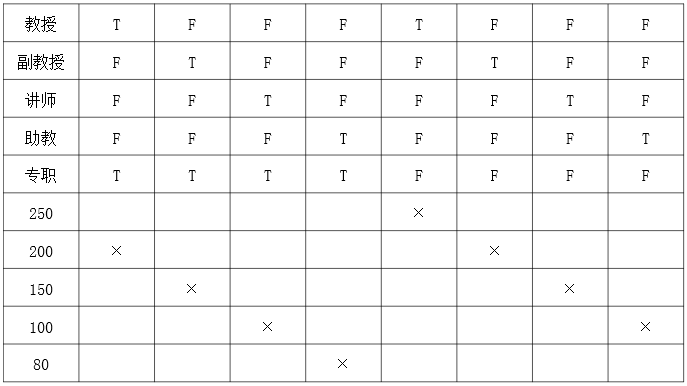
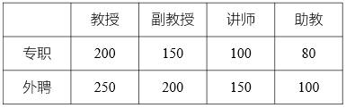
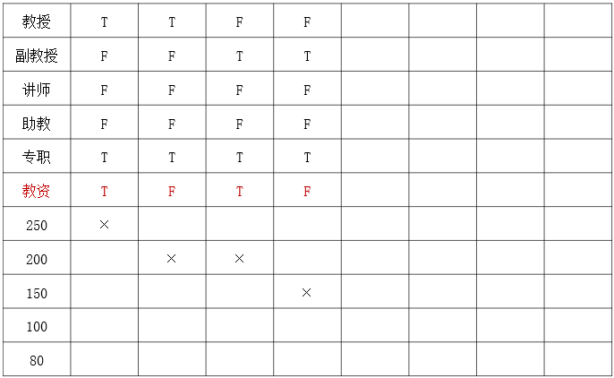

- 判定表 Decision Table
- 也称决策表
- 一种强大的逻辑分析工具
- 用于表示复杂条件组合与应做工作之间的对应关系，即多逻辑条件下执行不同操作
- 判定表的核心作用不是直观，而是 穷举 ：所有可能的组合都列出来，从而发现逻辑矛盾
- 组成 Component
- 条件桩 Condition Stub：
左上部
所有影响决策的输入条件
- 动作桩 Action Stub：
左下部
所有可能做的工作、操作或决策结果
- 条件项 Condition Entry：
右上部
针对每一列规则，标明对应条件桩的取值
用T表示左侧对应的条件成立，用F表示左侧对应的条件不成立；空白表示条件成立与否不影响
- 动作项 Action Entry：
右下部
针对每一列规则，标明在该条件下应执行的动作
画×表示在该列上边规定的条件下做该行左边列出的那项工作，空白表示不做该项工作
- 特点 Feature
- 不适合于做通用的设计工具
- 不能表示顺序结构和循环结构
用判定表表示某校各种不同职称教师的课时津贴费
- 某校对各种不同职称教师，根据其是本校专职教师还是外聘兼职教师，决定其讲课的课时津贴费
本校专职教师：教授 200 元，副教授 150 元，讲师 100 元，助教 80 元
外聘兼职教师：教授 250 元，副教授 200 元，讲师 150 元，助教 100 元

判断表
- 分析比较下表的特点

判断表
增加一个条件，如果具备相应的教资，额外增加 50；尝试分别使用判定表和普通表展示
- 增加教资条件
- 原有组合翻倍
- 以专职教授和副教授为例；其它请自行补充

增加教资条件的判断表